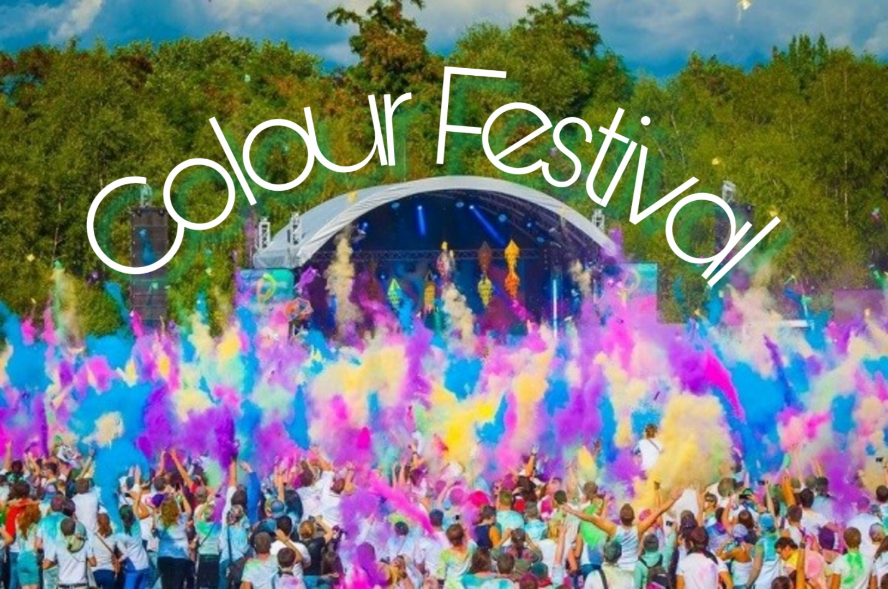
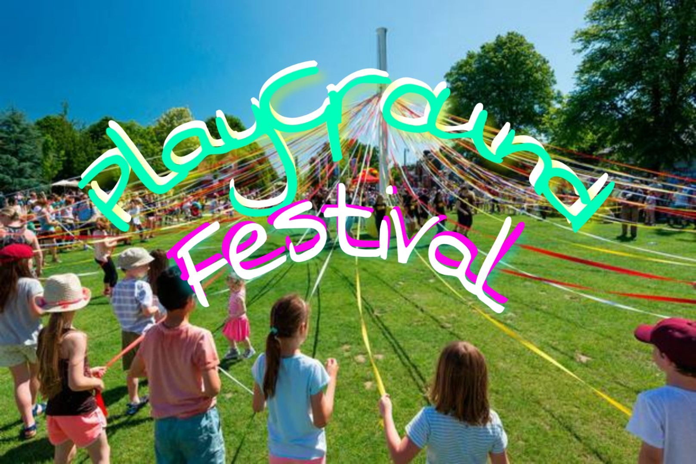
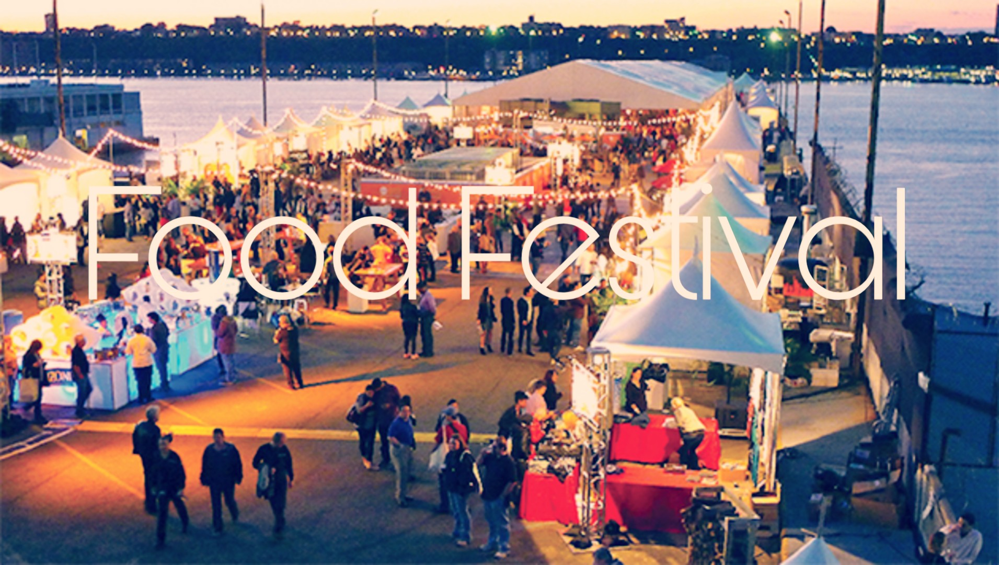

Information
What to know more about FTP festivals?

Colour Festival
Colour is what brings life,pride and joy to the world,without colour the world would be dull and lifeless.The FTP Family Celebrates colour every year and we want you to join us celebrate, with a festival.
Last updated 3 mins ago

PlayGround Festival
It is a family friendly festival , but it is mostly dedicated to younger children as we the FTP Family provides for all.
Last updated 3 mins ago

Food Festival
For the food lovers out there, this festival is for you.Come and enjoy food from all around the world.Let's celebrate the harvests and give thanks for a plentiful growing season.
Last updated 3 mins ago